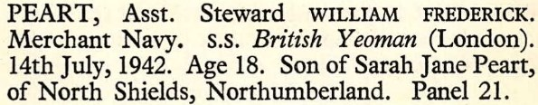
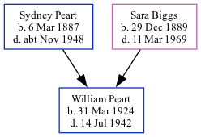

William Frederick Peart 1924 - 1942
[ Home ] | [ Calendar ] | [ Surnames Index ] | [ Family History ]The 2nd of 3 children of Sydney Peart (a locomotive engine driver) and Sara BiggsWilliam Peart was born in North Shields, Tyne and Wear, England on Mar 31, 19241,2. In 1942 he was serving in the military (regiment: Merchant Navy; Rank: Assistant Steward).
He died on Jul 14, 19422,3,4.
Parents
- Sydney Ralph was born on Mar 6, 1887
- Sara Jane was born on Dec 29, 1889
Citations
- England & Wales births 1837-2006 - Findmypast
- World War 2 Allies Collection - Findmypast
- British Armed Forces And Overseas Deaths And Burials - Findmypast
- Commonwealth War Graves Commission Debt Of Honour - Findmypast
Media
Commonwealth War Graves Record

England & Wales births 1837-2006 - BMD/B/1924/2/AZ/001049/057
British armed forces and overseas deaths and burials - BMD/D/MARITIME/554706
Commonwealth War Graves Commission Debt Of Honour - GBM/CWGC/ROLLOFHONOUR/001537236
World War 2 Allies Collection - WW2/07062279
Family Tree
Generated by ged2site. Last updated on Nov 13, 2024